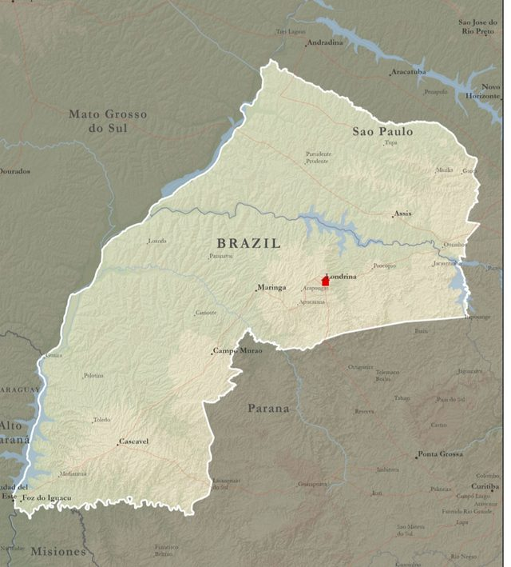

Chá Missionário
Elder Borges
Missão Brasil Londrina · 2026–2028
Tudo começa em 18 de novembro
--dias
--horas
--min
--seg
Contando os dias para o início da missão.
Escolha uma opção abaixo caso sinta o desejo de contribuir
Doação Roupas para a missão Pix Missionário Um valor simbólico
Para onde ele vai
Missão Brasil Londrina
De 2026 a 2028, o Elder Borges serve na região destacada no mapa, no norte do Paraná e no oeste de São Paulo.

Mural de recados
Deixe uma palavra
Escreva uma mensagem de apoio ou uma oração para o Elder Borges.
- Carregando os recados…
Missão Brasil Londrina · 2026–2028